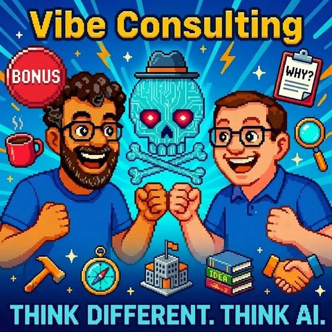

Vibe Consulting & Bonus
Auf Deutsch lesenTopics KI-AgentenSoftwareentwicklung
Guest Prof. Dr. Volker GruhnStephan Kempf
What it is about
What happens when agents start providing consulting?
In this special double episode, Mark and Jens talk with two guests directly from the adesso Digital Day 2026:
Prof. Dr. Volker Gruhn, chairman of the supervisory board of adesso SE and professor of software engineering at the University of Duisburg-Essen, as well as Stephan Kempf, expert in mobile, on-device AI and agent harnessing at adesso mobile solutions and co-author of 'Corporate LLM'.
The focus is on how software development, consulting, and make-or-buy decisions are changing through AI. What does it mean when applications can seemingly be created by prompt today? What are the opportunities of Vibe Coding – and where does the dangerous illusion of simple software development begin?
The discussion shows: AI can massively accelerate development, but sustainable software cannot be created solely through good prompts. Clean specifications, software architecture, requirement engineering, skills, and a stable agent harness remain crucial.
⸻
Guests
Prof. Dr. Volker Gruhn
Chairman of the Supervisory Board of adesso SE and Professor of Software Engineering at the University of Duisburg-Essen. He brings the perspective from software engineering, business practice, and research.
Stephan Kempf
Mobile × AI at adesso mobile solutions, specialized in on-device AI, agent harnessing, and the practical application of AI in business contexts. Co-author of "Corporate LLM."
Transcript
00:00:00Welcome to Think Different, Think AI, the podcast by Mark and Jens.
00:00:07Two technology-loving minds who not only talk about artificial intelligence but live it.
00:00:14Here you will find clear classifications, real practical insights, and a fresh perspective on what’s possible.
00:00:20Understandable, critical, and always with a wink.
00:00:24KD for thought, for a smile, and above all for discussion.
00:00:33Today is a very special episode.
00:00:35In the first part, Jens and I have a guest, Volker Brun, from Adesso.
00:00:41He will introduce himself shortly.
00:00:43And speaking of Adesso.
00:00:45I had the opportunity to attend the Adesso Digital Day 2026 in Düsseldorf
00:00:52and took the chance to record a live episode together with Stefan Kämpf.
00:00:59We talk about skills, about Agent Harness, and the question Meg Orbei.
00:01:04From that side, today is something special. You’re getting a double episode, a special episode.
00:01:12Have fun!
00:01:13A wonderful good day.
00:01:16I was about to say from the broadcasting station, but I realize that
00:01:20a bit of my remaining vacation is still hanging over me. Welcome to ThinkDiffin,
00:01:24ThinkAI and in good old tradition, Jens and I have today once again
00:01:29not ventured into an episode alone. We want to spend a
00:01:33bit of time discussing the topic from Vibe Coding to Vibe Consulting.
00:01:39How could one get invited there, and I’m really excited to have someone
00:01:44as a guest with whom I’ve had the pleasure of speaking a few times on the
00:01:49podcast. I didn't know how to get this better. With me, or with us today in
00:01:56our virtual studio is Volker Kuhn, and Volker, I think it's really nice
00:02:03that you are here. Thanks for coming. Yes, Mark, Jens, thank you very much. Have a nice evening as well.
00:02:10I’m also glad to be here and I’m looking forward to our conversation. The funny thing is, though, there's
00:02:15the ash at the Mainhaub. I sent an invitation link and it was to a completely different
00:02:19podcast where I was once a guest, so thank you, Volker, for taking it so professionally.
00:02:24And before we dive into the topic, Volker, I mean I know you, but our
00:02:29listeners may not. Would you like to say two or three sentences about who you are,
00:02:33What you do? I like doing that. Volker Grun, Dortmund computer scientist, a dual
00:02:39work life, in my heart job and in my main job, I am a university lecturer at the University
00:02:43of Duisburg Essen. I have a teaching position for software engineering, so I take care of
00:02:47the question and I am also interested in how software systems are developed and operated.
00:02:51I've been doing something similar for a long time, about 30 years at various universities and
00:02:57I co-founded a side activity, a side job at media.desus.edich nearly 30 years ago
00:03:02and currently, I am the chairman of the supervisory board there.
00:03:06Thank you.
00:03:09I think it's nice when we have such a side activity, I briefly considered, I have
00:03:13published a book on the side and I've already had quite enough to do, from that
00:03:17side, very nice.
00:03:18We want to talk a bit today about the topic of Vibe Coding and Vibe Consulting.
00:03:25Maybe we should start with Vibe Coding and Jens, you're here too, right?
00:03:29So not that I'm here now...
00:03:31I'm here too, I'm just happy right now, so I'm still waiting for my entry,
00:03:35because my heart is of course laughing at the subject of Dortmund, because I am honored
00:03:39Dortmund, and then I'm glad that I can talk about this introduction you just made
00:03:42which was to put Dortmund in the spotlight afterwards.
00:03:44Good city, a good university in that area, right? A lot is happening in Dortmund, isn't it?
00:03:50Accordingly, yes, a warm welcome to Onen.
00:03:53From my side regarding the podcast.
00:03:55Yes, Mark, we probably want to briefly touch on the topic of what Vibecoding actually is and such.
00:04:00That we might want to talk about this again before we dive into the deeper topics,
00:04:05on how to move from Vibecoding to Vibe Consulting.
00:04:09Because for some out there who might not know exactly what it is,
00:04:14it’s a bit about how I can make normal inquiries, which I can of course also make here in AI in the area of,
00:04:21I want to know something, I want to search for something or I want to research something,
00:04:25or I want the AI to perhaps book an appointment for me.
00:04:27Somewhere I can of course use Vibecoding, that’s why it involves whole computer programs, apps, software,
00:04:34the SaaS provider solution or build something else, so I can go through the whole potpourri
00:04:39of things I can do. That’s a bit what lies behind Vibe Coding,
00:04:43so it’s really about saying, I just prompt, I don’t even have to have
00:04:47programming experience in quotes, for the AI to build decent solutions for
00:04:52me that I’ve thought of. And that’s a bit hidden
00:04:55behind Vibe Coding. There’s already the first transition,
00:05:00so if I look at Vibecoding, Jens said what he understands by it and that's
00:05:06all so cool. I mean, I also know that people come up to you and say,
00:05:11well, make or buy, this is a completely new world to evaluate compared to before, because making is
00:05:18suddenly so much easier. But how do you see it, Volker? So when you say,
00:05:22okay, you write software with the help of, I write a prompt, Jens just said,
00:05:27something perfect comes out. Is that everything or is there perhaps a bit
00:05:31more to it? And how might this develop, if you think about it, okay,
00:05:37if everything is reduced to a word like I wrote a prompt for a
00:05:41great software solution?
00:05:42Only if such a prompt is ultimately a complete specification of the software system, then
00:05:48there is still no difference. And so I don't want to disturb the word first of all
00:05:50but promise behind it that software development will actually be significantly
00:05:56simplified. And I think there's something to it. I don't believe that through
00:06:02Wipe-Coding people can develop large pieces of software if they are not used to, used to,
00:06:11thinking in software structures and abstracting, structuring, generalizing somehow for
00:06:16a daily business, how they are heard, or so belongs to core competencies. Then I believe,
00:06:21I believe, I no longer believe that. I think that's still for some toy application. I believe that through
00:06:25Wipe-Coding many applications have been created so far that you could have bought in the app store for
00:06:291.9.19 a month and then spend the night with it and tokens
00:06:34to gild, let's say, still a high price and the transfer to say, also
00:06:39look at the capacity for the management of my birth, the gift list and that's why
00:06:43I can also build an ERP in this way.
00:06:47I was annoyed by that.
00:06:49Yeah, well.
00:06:51As I said.
00:06:53Yeah, it is, I felt a bit reminded of my youth. Long, long ago.
00:06:57Back then it was said, when the internet came up and websites.
00:07:02There was once the saying, I don't want to offend any profession,
00:07:06but the saying was back then, no matter if you are a baker or a butcher,
00:07:10today you are a perfect website writer,
00:07:12because if you learned a bit of website coding in continuing education,
00:07:16you immediately had your project and were born to a higher.
00:07:22And it feels like that right now,
00:07:27because if you're not able to say what do I need, how would I like it
00:07:30and see AI as an enabler, then you quickly end up with something,
00:07:36that might look pretty cool, but looking cool alone doesn't make it okay,
00:07:42With an ERP system, I wouldn't use the phrase look cool, even with the fewest products
00:07:46in my mouth, because crossing the bridge is probably difficult.
00:07:50But you present something, people perceive it visually, wow.
00:07:55And then it means in reverse, Wipe Coding has saved the world.
00:07:59I mean, you know it both from software development or also from other
00:08:03things, when you see the result and the result looks nice, then
00:08:07the associated work that you used to do with your hand work,
00:08:12maybe coding software, today maybe you get a bit of help from AI.
00:08:16It's not at all identical to what other people associate with it,
00:08:20because for them it still looks nice.
00:08:21They cannot imagine what effort is behind it.
00:08:25And now with AI it's even worse.
00:08:26Now with AI it means, you've coded e-Wipe.
00:08:29You put in a prompt, something comes out.
00:08:32I do it all myself now.
00:08:33Yeah, I'm the one-man show.
00:08:34Who needs, there come the changes.
00:08:36We still need all the consultants and all the developers.
00:08:38Move aside, I have a code subscription,
00:08:41Then I'll quickly do it myself, right?
00:08:44You're doing it like this now.
00:08:46Or Volker.
00:08:47Or are you actually doing Vibecoding yourself?
00:08:51I'm not doing anything with source code, that goes wrong.
00:08:55I was a bit scared the other day.
00:08:56My own boss said he would now do Vibecoding
00:08:59and I said, damn, here comes the next one around the corner,
00:09:02until I realized that as someone from management
00:09:05I also started to write some code, yeah the poor developers, yeah. Here comes the boss
00:09:09around the corner and says, always take a look at this, I put something really ridiculous there.
00:09:12Yeah, but that's not only the case with the developers, that's true for everything. This is now,
00:09:20I recently sat in a small group with a few agencies, they also discussed
00:09:24the topic, and now the client comes along and says, I already have
00:09:27the design, the designs at this moment. Now quickly build it, because this is the
00:09:31next chain that we're talking about, now they also quickly build
00:09:35essentially an application, because my Talktide also Vibecodes over the weekend or something
00:09:39and did something.
00:09:40No, can you quickly pay before maybe you also dump it on your Big.
00:09:44I somehow read that last year alone, Apple, I believe, the number
00:09:48of apps that were registered increased by about 600,000, that there was somehow
00:09:51an 85% increase or something like that in the apps that are registered.
00:09:54This shows, of course, that a lot of AI-generated junk
00:09:59is quickly uploaded, because the engagement numbers do not increase that much at the moment, as
00:10:03you can also see on the side.
00:10:05No, no, but with Wipecoding, I struggle with the term Wipecoding
00:10:09in the classical sense, it somehow hangs here, you rely on your instinct for
00:10:13the problem and completely abstract from the solution, that's why I find it a bit difficult.
00:10:17a bit difficult with the Wipecoding, but let's say I prompt software systems
00:10:22or do it with a narrow specification that somehow comes about, maybe
00:10:27then natural language even becomes a substitute for a specification language
00:10:32at least. And then it does have benefits. Then I don't need to specify the ugly details
00:10:37of a software system because it knows from
00:10:41Assistant from the start, how the interface should look and how
00:10:44data structures are generated from it. And maybe I just need to
00:10:47specify the difficult parts. Then probably as precisely as possible,
00:10:51but maybe not right in a formal language. And then we have
00:10:55of course a huge, then we would have already made a huge step. And I mean, there are
00:10:59the first software systems, we will see that, which we put into operation without
00:11:04a person having seen the source code. Not for all systems, of course, not for all,
00:11:09and also not for all types of systems, but only for certain types, let's say,
00:11:14interface-intensive, algorithmically sparse, loosely coupled with the rest of the application landscape,
00:11:20something like that. But if you can create them without anyone needing to know programming,
00:11:24then we have long levers in our hands to improve productivity.
00:11:28Yes, and above all it is also a tool for those who can program,
00:11:33because with AI, under certain circumstances, I mean, you know the sayings,
00:11:38things you aren't interested in, you might be able to automate them away faster,
00:11:42but on the other hand, AI can, whether in Pair Programming or because you may
00:11:47really formulate tasks more cleverly, also find solutions that you might
00:11:51not have come up with alone. When I'm asked, like, who benefits the
00:11:57most from this, I still have the funny opinion that juniors can
00:12:01actually learn the most, if they engage with it, because the leap
00:12:05to a higher qualification can be guided by AI, and that the
00:12:10seniors, of course, if they engage with it, I would say, can really put some horsepower
00:12:16on the road, in my personal opinion, I believe that
00:12:20both classifications of people can progress the fastest. But I’ll say, we wanted to do a
00:12:28derivation and I'm even more looking forward to that part. That was just the entry to
00:12:32inviting our guest. Namely, now everyone talks about Vibecoding and everyone always has this
00:12:38in mind, yes, yes, software. It's getting swept aside. That's why we said Vibecoding and such
00:12:43stuff. But there are also many other areas of activity, because for AI, at the end of the day,
00:12:49it doesn’t matter whether it writes source code or documentation or other types of files.
00:12:56And I remember how we got in touch a bit over the topic,
00:13:00where I once did some vibecoding, namely my little consulting idea, where I said
00:13:05I’m trying to equip various personas with different roles, with different
00:13:12capabilities, and the system is supposed to generate something on the fly.
00:13:17And I find it fascinating, this experiment works even today, and if
00:13:24I now consider writing software is one thing, consulting is another, then
00:13:31I think that’s a really big field when you say that stuff basically jumps from
00:13:36source code creation to concept creation, maybe consulting, maybe as a sparring partner.
00:13:43How do you see that?
00:13:45Indeed, I also believe that high players are at risk.
00:13:51On the other hand, I always like to make fun of the PowerPoint artists who then disappear after they’ve drawn up PowerPoint.
00:13:58So implementation is something else entirely, I believe.
00:14:01But even with the PowerPoint drawings.
00:14:03Yes, but let's just take the part up to the PowerPoint drawings.
00:14:06It’s not over when the PowerPoint drawing is done, but then in consulting, it usually starts here,
00:14:13to bring what has been considered, so the consultant, the consultant himself has thought
00:14:17to convey to the client, to bring into their mind so that there is überhaupt
00:14:22a realization of the impulse actually occurs. And I find it to be a process that is heavily dependent on human
00:14:27interaction. So today we already receive, well, we,
00:14:31anyone who wants can get pretty good PowerPoint presentations on all questions
00:14:38created, but that doesn't mean they've internalized what it means, or
00:14:43actually absorbed the knowledge, rather they just have a PowerPoint set in their mailbox
00:14:47or elsewhere and then deduce from that what they need to do, what it actually
00:14:51comes down to, what do I really believe, what is particularly important to me,
00:14:56this is typically the result of a consulting dialogue, and that's not going to change.
00:15:01So I think the PowerPoint senders will now need less time to create the PowerPoint
00:15:05slides, but afterwards the job remains the same.
00:15:08It would just be good because they would have painted it with the help of AI and would have truly understood
00:15:14and comprehended it.
00:15:15That is of course a problem too, right?
00:15:19And the other person gets it and says, but those are a lot of phones, I'll summarize those for myself
00:15:23and then he gets the eight farmers, he could just get the prompt
00:15:27sent to him for the PowerPoints, right?
00:15:30Funnier, nektotic, I wanted to formulate an email to a company based in overseas Cupertino
00:15:37and I used Co-Pilot, saying, here this and that and
00:15:43this and that, and then I told it, please make this great English, and I
00:15:46pressed send, and what did it send? The prompt, please make the following great English
00:15:51and not the English translation. This led to my counterpart sending me back
00:15:57an email saying thankfully AI is international and then it sent me
00:16:02the response I wanted, but I actually found that very funny.
00:16:06But what you're describing is actually not so dishonest for the software developer.
00:16:12And as for vibe-coding, I would say at first glance, that is
00:16:17all quite effortless; with vibe-coding, you need to think about guardrails
00:16:21and what else it can provide you and how it helps you and how it leads you to
00:16:25a professional result, especially with regard to professional use.
00:16:29And with PowerPoints, my consulting is more than PowerPoint, but that was now
00:16:34your illustrative example, it's actually quite funny, some use PowerPoint
00:16:39to create presentations, and others use PowerPoints to gather themselves again,
00:16:42and a lot gets lost in between. Nevertheless, this is
00:16:46a field of work. I mean, we've had other professions here in this podcast
00:16:50as guests, where one must and can also ask the question
00:16:55is. Where does democratization lead to companies being able to perhaps do things themselves now,
00:17:05without covering the entire, the entire breadth of consulting business,
00:17:09but let's say do small things themselves because they perhaps no longer
00:17:13need anyone for that or can perhaps professionalize themselves in their requests,
00:17:17because they can discuss with their AI what they would like to request, where it can
00:17:22perhaps help me and whether what it offers fits my needs.
00:17:26But on the other hand, I once said in an episode that
00:17:31software developers are like water striders. What we do is the best.
00:17:35That such a thing surely exists in consulting as well. That you tell people,
00:17:39hey, watch out, this thing is not just a softwash writer. It can basically,
00:17:44if you engage with it, achieve so much more, but you also have to
00:17:50engage with it. So the research part will be different. But the research part is initially for all
00:17:57companies, all people with the same problem indeed the same. And it can be beautifully
00:18:02condensed and provided. When it comes to contextualization, prioritization
00:18:06and alignment with the individual additional objectives of the consultant, then it changes. And there,
00:18:14I believe, the path to understanding with humans is more efficient. I followed up on
00:18:23LinkedIn, Jens will talk soon, but I need to get this out,
00:18:25sorry. Jens knows this from last time when we had Thomas
00:18:28Long visiting and I somehow realized at the end that I never let Jens
00:18:32get a word in. I apologized afterwards, after
00:18:35we were done recording, but I want to mention it. If I follow you a bit
00:18:38on LinkedIn, you also occasionally emphasize the uniqueness
00:18:44of domain knowledge, industry understanding. So all that, where I would say now, both
00:18:51personal relationships as well as personal knowledge about the context of the customer, the user,
00:18:56which plays a crucial role and that, I believe, is understood,
00:19:02can also be a bit of a protective wall when it comes to the question of where you need cold AI,
00:19:09that's always pleasing to you and where you really still have a domain where a human
00:19:16provides added value, both on their own and in combination with AI. And that with domain knowledge,
00:19:21I found really exciting. I'm convinced of that. Although I believe, yes, I am
00:19:26really long convinced that even developers who develop entirely without AI,
00:19:30can develop better if they have a rough understanding of what it’s about. That is, if they have domain knowledge
00:19:34ideally. However, I believe that a change is also required.
00:19:38Basically, a change is occurring in how software development or consulting or
00:19:41the necessity of domain knowledge is structurally similar.
00:19:46One no longer needs to know the details of any
00:19:49programming instructions or algorithms while programming. One does not need to know even the
00:19:54latest APIs in architecture, but one does need to provide a rough
00:19:58structure, and I believe it is similar with domain knowledge.
00:20:01One must understand the professional connections,
00:20:04but perhaps not the last details that arise from any
00:20:07regulations in banks or insurance, as these cannot be queried well, but
00:20:13the general context and its impact on the structuring of processes, business models
00:20:18or whatever is to be structured, this general derivation requires
00:20:24real domain knowledge in a more holistic context rather than the details that the individual
00:20:32can work based on well, working objectively.
00:20:35Yes, I believe that's okay, let me dive into that quickly because it's exciting.
00:20:40I am also at this point where I've been thinking all the time, we have recently
00:20:44noticed such a shift in public discourse.
00:20:48Even Sam Altman has suddenly started saying that not all jobs will disappear.
00:20:52Recently, they were saying that everything is somehow rationalizable.
00:20:56It was all about having an AI workflow very soon.
00:20:59I have been thinking about that a bit.
00:21:01And for me, the topic is such that I say we are currently, regardless of whether we
00:21:07are now in a consulting firm or a company working with a consulting firm,
00:21:12a larger company, always facing the difficulty that we not only have formulated SOPs
00:21:18so far, i.e., any Standard Operating Procedures that we just recite
00:21:22could run in full automation because it is still a people business
00:21:28in many places where you actually, as you describe, need a certain domain knowledge,
00:21:33which can sometimes mean that I know someone who knows someone else, and I
00:21:37know how they react. In situations, maybe even in larger corporations,
00:21:43they are comparable to societies, with family structures in some cases, where you
00:21:47might have to meet the right person at the right moment, then maybe also
00:21:51know how that person behaves in that moment, so it might be smarter to
00:21:55talk to them on Monday instead of Friday afternoon. So these are also parts of this domain knowledge that simply belong to it, where I say, if I look at a consulting firm now, then it is certainly an asset, especially if I am likely going to be working with a client for a longer time and of course then basically know their domain, that is, their professional domain well. So I believe that this can actually be an asset of a consulting firm when I build a long-term client relationship, because then I essentially understand these non
00:22:25verbalized or standardized written agreements, actually,
00:22:29I can and I and I believe that as long as that is the case,
00:22:34there will always be a need for this, because if we reduce ourselves to the pure
00:22:39output, as we just talked about
00:22:43Consulting firms are certainly not just PowerPoint scrubbers and PowerPoint producers,
00:22:49but it is often reduced to that, and I believe that is exactly the same problem for a
00:22:54programmer when they are reduced to the expertise of the
00:22:56programming language, and the designer is reduced to the,
00:23:00I can basically achieve great, I can do super
00:23:03lock-in flow designs or something like that, yes, or the fryer
00:23:07would let himself be reduced to, I make the best
00:23:09PowerPoints, yes, then it is, of course, I believe, a
00:23:12topic where you will simply have difficulties in the consulting business
00:23:14in the future if that
00:23:17accidentally happened in the past.
00:23:19It doesn't come from nowhere, so these topics are
00:23:23not there, so one doesn't think that many consulting firms are PowerPoint
00:23:26firms if it wasn't partly so, to be honest, or?
00:23:29Ideas in, yes, and now we present, and sometimes that comes from the interplay between
00:23:34the consultant and the client, and original ideas come out that are not
00:23:39equally already rolled out ten times for all other
00:23:43companies on board, and that original idea falls away
00:23:47when all the mush is already created. Then everywhere comes the
00:23:50same mush out. So this really original stuff will ultimately be the differentiating factor,
00:23:55then human-made content is also really premium because there are chances for
00:24:00originality to emerge. Sometimes it is also originally wrong, no question about it, but
00:24:05sometimes also originally good.
00:24:07How long is it, well, I really said, he recently had his similar
00:24:13discussion with, but with agencies, with digital agencies, where we talked
00:24:17about how that also changes the tourism industry. And I had that thought
00:24:22in the evening, is it really still, if we now power band, just hold on
00:24:27a power band firmly, now without the tool from Microsoft, it can dive deeper
00:24:29yes, of course, but of course it is...
00:24:33Dear host.
00:24:34No, host is something else. Host is now again a text document and
00:24:38word processing tool. PowerPoint itself is a presentation tool. It was actually
00:24:42made for that. But it has been used both internally in companies, as well
00:24:46as of course also with the consulting firms externally, which then explicitly prepares these PowerPoints well for various stakeholder groups.
00:24:54Of course it has been misused to not say, I present in front of a large audience, but I transport knowledge or I uncover topics.
00:25:03Is PowerPoint actually still the right choice for this kind of work in the future?
00:25:08Shouldn't we ensure through the consulting house that we think that through?
00:25:12I also have to advise my clients again in the direction that they have to get used to it, that it is of course nonsense,
00:25:18that I generate a PowerPoint with AI, which they then analyze with their AI and extract the content.
00:25:24But that one perhaps also sets up the maintenance differently and says, how does it look?
00:25:28What is my handover format? What is perhaps the workflow that I give to the clients in the future, the MD file or something like that?
00:25:34What are your thoughts on that, actually?
00:25:36My thoughts are quite old-fashioned. I believe for many ideas or for many
00:25:41instruments of knowledge transfer, the appropriate means of choice is the German language.
00:25:47So my finger also again to the language, but natural language.
00:25:51Ideally in full sentences and if we now select them all the way to
00:25:56full paragraphs, so not just bullet point lists, but entire sentences
00:26:00one after the other with conjunctions and indicative and subjunctive in between,
00:26:05to express the diversity of human life and the inner connections. What gets lost here if I do this in PowerPoint and omit the verbs.
00:26:14Everyone can think of the right verb, and then we have it approximately, and we leave it that way, but we all feel comfortable.
00:26:21Therefore, for the hard real result, I recommend in such places where precision is particularly important, and not just the right pastel color choice, just text.
00:26:31And then I follow in front of the sentence, then someone can gladly go afterwards and say, I understood the text and I want to bring it here, and I will manage, I do it in this way in the presentation and then I might have 5 keywords on a PowerPoint again.
00:26:49Then there are Wikini keywords and not such broken texts that are broken in such a way that you can still think everything, but must understand none of it.
00:26:58While you were telling this, a completely different thought came to me, Sorryans,
00:27:03I know it myself. You sit there and get a presentation. Presentations
00:27:10are then also a bit naturally about knowledge and content delivery, but are
00:27:15a bit of self-creation, is also a bit of the, yes, the slide shouldn't
00:27:21look like night, because otherwise no one wants to watch, and then you encounter
00:27:26different people in the art of presentation. Some read, let's say word for word and
00:27:32might turn around occasionally. Some are total speakers, storytellers, and you hang on
00:27:39their lips, yes, and think, it doesn't matter what they're showing back there. At the end of the day though
00:27:44still, there is a developed content in it. It caused work. It is also completely irrelevant,
00:27:51how much work it caused and it will be presented to you in the form of a presentation,
00:27:55so that you can have it in half an hour, an hour, however the meeting is scheduled,
00:28:00to have a status update and agree on follow-up activities or I don’t know what.
00:28:04Project results or order plan, it doesn't matter.
00:28:07So, while you were just speaking and said, a detailed text, that
00:28:14could indeed come back in fashion.
00:28:16Now, independent of whether this detailed text, I would say completely manually
00:28:21or with digital support was created, but you essentially have
00:28:24the chance thanks to AI. And that’s what I wanted to derive now. Sorry. You
00:28:29get a wall of text, but you as the recipient could, I mean Notebook, LM, Claude,
00:28:36Gemini, whatever it's called, also consume it in a way that's suited for you in preparation
00:28:41or for something that’s closest to you. That helps you understand things
00:28:47and especially, if you do this over time, then you also have
00:28:52context knowledge that you piece together, and that for me circles back to Jens.
00:28:56What is the format? Sorry, I don't want to be too nitpicky, yes, but this topic,
00:29:01I trim my guys and I only have guys in the company in my team. Write Markdown where it's
00:29:06applicable, because at the end of the day, it’s about the content of this text and not about, do I have
00:29:12a nice formatting and the color determines the context and I don't know what. And that’s
00:29:18basically my segue to the last part of our meeting, where is this
00:29:25going to develop? Now you said, okay, we have text, we’ve said, okay, the
00:29:29perception might change a bit, that people will realize again,
00:29:33okay, the combination with the machine together. What should we do now both on
00:29:39the customer side from your perspective, or from the perspective of a consulting house in five
00:29:46years, how do we need to prepare, so that we can continue this conversation in five years and
00:29:52say, it was a good idea with the texts, it somehow developed. I mean,
00:29:56I don't want to know from you what the next model looks like. But what do you think,
00:29:59what do the groups need to engage with, when we take a look, at whatever
00:30:04timeline, I said five, it doesn't matter, at whatever timeline?
00:30:07First, I must say that in the last 18 months, I have been dealing with all time-related
00:30:16Speculations have completely obscured it, and the confidence level will likely be affected
00:30:21just barely over five seconds to break it down now in shaping.
00:30:23But that's how it is for everyone!
00:30:24I didn't want to know that either, but you're not alone.
00:30:27Yes, I believe that in the contexts we've just discussed, the various
00:30:33in software development and in IT consultancy, let's take them sometimes
00:30:37also in consulting in general, that job profiles will not completely disappear, that
00:30:42they are affected to varying degrees by the quantity, the simple tasks
00:30:46are obviously more so. And for the sake of preparation, I currently have no
00:30:52better ideas than to say the guys and the girls who do the job for me,
00:30:57everything related to IT, they have to either know at least one domain really well or
00:31:03be exceptionally good. And everyone has to be able to assess exceptional possibilities.
00:31:10And with that, we end up with a Forward Deployment Engineer, where you say they have to
00:31:15somehow bring it all together to then leave in the context of effect with a client only
00:31:19after they have created value. And that is of course a different
00:31:23model than what we have today, where a few people are running ahead and trying,
00:31:28to do business analysis, crime engineering, then comes a lot of software development. That's not how it
00:31:33will be, but I think you also need architects and developers and others,
00:31:37who can prepare and transfer knowledge. Should I create the PowerPoint and those who create the text
00:31:41just maybe in a different mix. I've talked for a long time and can at
00:31:45the end say, other mixes allow you everything, almost even pasta. So he somehow calls it
00:31:50conversely, I don’t know. You articulated that nicely just now and
00:31:57that reminded me of an anecdote from my life. Now, it doesn't matter whether we are
00:32:03nerdy about IT or whatever, we are talking about AI enthusiasts. And depending on,
00:32:09where you speak, it's called vibe coding. Sometimes it’s defined differently.
00:32:13We haven’t done that yet; we definitely can’t stop or be downgraded to genetics discussions.
00:32:19I want to say one more thing, then you can talk about pensions.
00:32:23I’m getting to a point. You meet people, and depending on how many you interact with, you’re talking about a village community.
00:32:31So, it’s already familiar with Hitler-Persia, but it's about skills.
00:32:36That falls under employee development. We understand something different by that.
00:32:40I built a skill that does consulting, orders the consultants. No, no, no, it’s supposed to help you prepare things.
00:32:46So everyone is sitting in the room, everyone is nodding; you know how that goes,
00:32:51maybe it used to be with an abbreviation, yes, everyone nods, no one dares to contradict, because
00:32:56everyone has a word and an understanding in the room. And I think that's also a point,
00:33:00where you need to invest in the coming years, regardless of what timeframe that is,
00:33:04to shape the language we use not whether we speak German, English, or anything else, but
00:33:11that we choose terms that don’t leave anyone behind and don’t lead to misunderstandings or
00:33:19something confusing. Yes, with that. So from that perspective, perhaps a tip for consulting,
00:33:25Speak in the language of the customer.
00:33:27What do you say?
00:33:29Agents of Software 2.
00:33:31Definitely.
00:33:33And I think speaking the customers' language,
00:33:39is what you would have thought earlier,
00:33:41when you both talked about it,
00:33:43to what extent now, I’m always
00:33:45somewhat of a UX Hong denier,
00:33:47the IC there in the discussion,
00:33:49to what extent, in principle,
00:33:51the understanding of pure software
00:33:54pure software development, so if we also consider that, because it was just, in software development
00:33:59is only understood as the purely technical part, programming the code perfectly
00:34:04or even describing the requirements, so then it’s really
00:34:11actually relatively easy for AI to replace in this quality and it will only
00:34:15get much, much better. The models will improve, we will see incredible
00:34:18Seeing things, what all works when we look at the latest effects models
00:34:22and similar things, which we briefly observe and then are gone again.
00:34:25But that means, if we look into this, it’s naturally wise to consider a bit of what
00:34:31is also important for humans, or always important, that we can connect to others.
00:34:35We can dock on to them.
00:34:36And for that, of course, language is an important medium, where I say, if I again
00:34:39use jargon and basically make myself into a specialist, and then throw around AI terms
00:34:45and then also block others, I simply will not have them in my thoughts.
00:34:49And that’s why I believe it’s important, in principle, to establish a high connective ability to other domains,
00:34:54to other disciplines.
00:34:55I believe AI can help with that much more than you could in the past.
00:34:59Market place is the one related to the topic of junior, as I mentioned earlier.
00:35:02The junior can achieve a higher quality and faster,
00:35:05by improving in their software development.
00:35:07And I believe the junior can also improve in their software development,
00:35:11by understanding the other disciplines around them better thanks to AI
00:35:15and being able to connect better.
00:35:16And I think that is also an essential part of the consulting business in the future.
00:35:19to say how well I can essentially dock with my skills that I bring, yes, then
00:35:24also connect to the agentic AI system of my company and provide the right consulting service
00:35:29actually rather there in the moment. So for you, it will be much more exciting,
00:35:32to develop skills that essentially offer a high docking capability to probably
00:35:39increasingly complex IT systems than we can imagine today.
00:35:43Yes, yes.
00:35:44Because it's not that simple anymore, right? Yes. And I think that's a
00:35:49point where I say, when I think about it, I fully agree with you, Volker, being an oracle is
00:35:55harder today than ever before, compared to 10 or 15 years ago, because we simply have with the
00:35:59oracles, what can happen in 4 to 5 years. But I believe nowadays it is even
00:36:03more extreme, because this half-life of imagination, that's already
00:36:08somehow limited to half a year, because then such drastic things happen again.
00:36:11And I think that is an essential thing. One simply has to stay on the mainnet
00:36:16and engage with the topic, always with a critical eye, and I believe then
00:36:21one is always well-positioned, whether one is now on the consulting side
00:36:25or on the corporate side in this case or also as a small software shop somewhere.
00:36:30being out and about, as long as one remains open to all these innovations and looks around
00:36:33to the right and left and not just in one's own area of expertise, although it's important,
00:36:37to have domain knowledge, but even if one looks a bit beyond the plate,
00:36:40then I believe you prepare yourself well with AI capabilities, and you said,
00:36:44your people should do the same, that we are equipped with brilliant skills.
00:36:48Yes, I think that's what Mark and I also want to reiterate here,
00:36:51no matter which guests we talk to or when we discuss like this.
00:36:55One has to engage with the topics today.
00:36:56You can't avoid it anymore.
00:36:58It's not something that will go away, to be honest.
00:37:01Yeah.
00:37:03Well, then, Volker, thank you for being here.
00:37:09It was nice to see you on the other side,
00:37:12as I said, being our guest.
00:37:14We wish you a nice evening.
00:37:16If you enjoyed it, please leave a like, a thumbs up.
00:37:20All AIs are welcome to subscribe here.
00:37:22And otherwise, we also look forward to you tuning in next time, at Zinkdifferent, Zink AI.
00:37:28Thank you and goodbye.
00:37:30Thank you all.
00:37:31Thank you, Ms. Kerl.
00:37:32Goodbye.
00:37:34We are running the podcast Zinkdifferent, Zink AI, where we always talk about the fabulous world of AI.
00:37:41And we said, why not use this auditorium instead,
00:37:44auditorium, this beautiful hall, this environment should allow us to discuss this topic
00:37:49a bit.
00:37:50While I take my seat now, I would briefly ask you to say who you are, so that
00:37:54we can dive into it.
00:37:55Yes, a wonderful good afternoon.
00:37:56I am pleased to be here today in this podcast, Stefan Kemp, here at
00:38:00ADESSO for the past one and a half years as a consultant for mobile solutions and currently in the
00:38:06intersection between mobile and AI.
00:38:09Good.
00:38:10So let's get started with SyncDivision, SyncAI.
00:38:13Stefan, we have thought about a few things today,
00:38:17that we want to talk about with the audience.
00:38:19The first topic we have is skills.
00:38:22When I talk to people about skills,
00:38:25it seems that one or the other reacts a bit when the term comes up,
00:38:29when one starts to ramble.
00:38:30I don’t know if you know that feeling.
00:38:32You walk into a room, there are a few managers sitting there,
00:38:35manager, I don’t want to gender anyone here.
00:38:37And then you stand there and say,
00:38:39yes, let’s please discuss skills.
00:38:42And then you sometimes get people who have a slight twitch in their lip or raise an eyebrow.
00:38:47You wonder why, because people who might not be living in this AI babble, IT babble say, skills?
00:38:55Those are indeed topics for employee development.
00:38:57Why are they talking about skills here when IT is in the room?
00:39:00From your side Stefan, what are skills?
00:39:03Yes, those are skills. That's sort of the fundamental question.
00:39:07I might define skills a bit differently than most.
00:39:11So I use skills first of all, to simply create a PowerPoint presentation, for example.
00:39:16And it’s important to me that the PowerPoint looks exactly how an Adesso PowerPoint should look,
00:39:22that it sounds exactly how an Adesso PowerPoint should sound.
00:39:26And it’s not just enough to write a great prompt,
00:39:29it then has to be saved and reused consistently or also adjusted from time to time,
00:39:34but you need a bit more than that.
00:39:36I put everything into a Markdown file, I say this Markdown file,
00:39:39in that case. Look here, in this folder you'll find the Adesso templates. You’ll find
00:39:45the font, the colors, etc. And I compile all of that together and every time I
00:39:50tell my agent, oh look here, we have the topic ABC, please create for me a
00:39:54presentation, it will reference exactly that skill and this entirety,
00:39:59that you just described, applies also to Wordfall, etc. But this is how I define
00:40:05muscle. I must say, it goes a bit more in the direction of
00:40:10Stropic back then when this topic of skills emerged, it has defined this whole thing, and
00:40:16I am indeed very much oriented towards that. So when you ask me, what are skills,
00:40:20we come to a similar result. It's something like when you
00:40:24onboard a new employee in a specific field, then you have a kind of
00:40:28task description. What do you have to do? An AI is inherently
00:40:33perhaps very smart, but what good does it do me if I put the smartest
00:40:37colleague at a computer, he still doesn't know what to do. So you write
00:40:42it down in a list, I call mine an Orchestrator, you write what he has
00:40:46to do. Some things he really has to execute very precisely, you can use skills, if you
00:40:53take the definition from Entropic, as you just mentioned, with appropriate scripts
00:40:58for determinism, so for tests, deploying sequences of requirements, and where the AI can play to its strengths
00:41:06because it may say, okay, you have here basically a point, a very long point,
00:41:11an even longer point. The light deterministic can also be written down,
00:41:15in the Markdown files you mentioned, and all of this can then be compressed into
00:41:20a zip file and then you can give it, for example, I think at Google it's called something like
00:41:24Jamst and at Claude it’s called Skills, at Open AI it's also called Skills, but
00:41:30to make a long story short. At the end of the day, it's a Markdown file that can also be read very
00:41:37well by humans. If you're wondering what this is good for, did you use the example
00:41:42with the slides? Yes, we also have at our place, I've not made a single
00:41:46slide for months because I've built a Skill
00:41:52for myself and my colleagues, where I say, hey, about this topic, here are the materials,
00:41:57please make it as appropriate for the company, color, pen, imagery,
00:42:02layout of the slides, in the right format, depending on
00:42:08which market we are in contact with. And it does this automatically,
00:42:13but it does this not only for PowerPoints. It does this for consulting topics,
00:42:18does a SWOT analysis for me. He does this for requirements engineering. He does it for
00:42:23where square people might have written three numbers in a back block. Interviews
00:42:28everyone for so long until he has perfected the answer, basically grilled me,
00:42:34so that I give him the answers in a way he can elaborate in German English,
00:42:38whatever came up, yes. And all of this together is skills. Can you regularly
00:42:45assess these? So, I have, this is also a skill of mine. So I have a skill that
00:42:51evaluates my agent's sessions, namely regarding whether I took the results of my
00:42:59skills or have worked on them again. So the motto is, the PowerPoint skill says
00:43:06then for example, here are the 10 slides and I told him afterwards, but I
00:43:10would like 11, because I need a summary. Then he'll learn that over time and this
00:43:14self-training ensures that the skills with me then
00:43:18unhinged and automatically participates. If I no longer want that, I write at,
00:43:22I don't want that anymore. And then over time it will learn that too,
00:43:26so that it won't offer it to me anymore. That's skills. I have, that will still be added, a,
00:43:31I call it a Devil's Advocate Skill, which I always run through when I want,
00:43:36it to look at it really closely again, but from very different perspectives. So
00:43:41it critically goes over it and then learns that.
00:43:44Why is that important before you bring up the next point?
00:43:47If you conduct the experiment and you ask JetGPT,
00:43:50is it a good idea to offer my feces for sale in the city center.
00:43:54Could the AI system be inclined to wish you your color laff the IT for happiness.
00:44:00From that side, it's a skill that might critically examine the whole thing again.
00:44:03Not completely unimportant.
00:44:05Do you want to take the next topic?
00:44:06I would like to come back to that. Does that mean you've already tested this pomp?
00:44:11Yes.
00:44:12Can I have it? Okay, skills. We have three points on the agenda, so three levels.
00:44:17Skills, next is the Harnis. What I would be interested in, as I'm currently
00:44:20dealing very deeply with this topic in the principles area,
00:44:24who of you can make sense of the term Harnis?
00:44:29Yes, that's also the Adesso colleague. She talks about the hand topics, that's understood
00:44:32of course.
00:44:33I wonder if that was an Adesso colleague?
00:44:34Look, don't worry, we don't have handheld mics now, or else we'd be passing around, right?
00:44:38But now the question to you, because this is the point that I think few know.
00:44:44What is a Harnis, an agent Harnis?
00:44:47I always find it quite amusing, you know? When you also consider what it might
00:44:50mean in German. Most of you actually interact with an
00:44:54Harnis and an AI system. For some, it's the co-pilot interface, for others,
00:44:59it's this Codex app from OpenAI, Cloud Code, Co-Work app. Accordingly, the
00:45:06distribution of Harnis, if you ask me, is the environment in which a model is embedded.
00:45:11Because the model alone, some say, okay, the model alone with a system prompt,
00:45:17that's only half the battle. Depending on where you call up the model,
00:45:21you get completely different results. That’s also the reason why something like
00:45:25Cloud Code. When you look around in social media and so on, when people say,
00:45:30I have my own model at the back, then it acts on this own model, so those in the back
00:45:35do not get a job from the house, quite differently with Cloud Code,
00:45:40than if one hooks the model into something else. From that perspective, we at our company
00:45:46are building our own harness because we say the model is one thing and that you have
00:45:52tools. Then very quickly terms like A2A, MCP come into play, which aren’t even on
00:45:56our agenda today. From that side, we could also film for an hour. But a harness that gives me
00:46:01insight into how the model thinks? What do I provide to the model? How do I ensure that the results
00:46:08of the model are auditable? How can I later prove that when I execute a skill,
00:46:13that the result was indeed produced by this skill and not, let’s say, the user
00:46:19changing three things or using an outdated skill or using a completely different skill
00:46:23and saying why? I used that skill. The same goes for token costs.
00:46:28I recently saw a report again where someone wrote, look,
00:46:31creating slides for 7.95, that’s not expensive at all, that’s true. Creating slides
00:46:37for 7.95 is not expensive, because no matter which consulting house or company one works in
00:46:42for 7 euros, no decent slide has ever been produced. But if I now consider,
00:46:47what can I provide in advance through a harness so that the token consumption
00:46:53is reduced?
00:46:54Without expecting the user to specifically prompt and first use such
00:46:58strange tools like Caveman or whatever is circulating on social media, I have
00:47:03the opportunity with a harness to ensure that I manage this so-called aging loop
00:47:09before it starts, after it’s done, while it’s working, that I tell it which
00:47:14models, which depth, which efficiency. And for me, that’s the harness that brings it all together.
00:47:20Application unites and basically provides a home, even if home is not the translation.
00:47:26I remember when we were writing the book together and for the first idea
00:47:30we had of what we would put in the book, what this Hannes might look like and we simply
00:47:35couldn't find any visuals because the word view, I have to honestly admit, I want to say
00:47:41problematic, but difficult. Above all, difficult to visualize and
00:47:44conveys somehow a different content than the whole topic might mean.
00:47:49But if you're Hannes, I just said Hannes, so we sit down and build
00:47:53ourselves one, develop one. This quickly leads to the question,
00:47:58why are you building a Hannes? We heard it today, this morning in the
00:48:01keynote as well, if you are proud of building something yourself,
00:48:05certainly also with external support from colleagues. This whole question of
00:48:10make or buy. That's something where it feels like the cards are shuffled. If a consultant
00:48:17comes to my place tomorrow and says, let's implement this ourselves, then it's not that
00:48:22you, I mean, it's not a secret, right? You go back a bit
00:48:26into the past and say, building it yourself? Are you joking? Do you even know what that
00:48:32means? I mean, if you do something like that on-site, it takes months or even years,
00:48:37partly built into the products. Certainly, if you have software with
00:48:42Agenting-Baudia, Vibecoding, Vibe-Engineering, whatever those
00:48:45whole terms are. This is of course more than just
00:48:49I played a prompt. Even if the result looks really cool after a
00:48:52prompt, to put it that way, what does it mean?
00:48:55Always? Holfig means that it doesn't necessarily mean that it's
00:48:59security compliant data protection, that everyone has already thought about that and
00:49:03about everything, that when I fire the same prompt again
00:49:05I get the same result, yes from the side this make still has
00:49:11challenges where you can certainly approach it with either your own
00:49:16or external support so that you can say to yourself
00:49:20where you don't bring the problems upon yourself even faster because
00:49:24for example from my own experience I have teams that do agency
00:49:29software development and when they used to do two sprints every two
00:49:34weeks, the colleagues now do two sprints in one week, because the
00:49:40backlog curiously is empty on Monday evening, and accordingly you always have to
00:49:44look again at how to evaluate Melk or Bye, but it’s just not the way it was before.
00:49:49I would say that it still is like before, but we certainly notice that
00:49:54too.
00:49:55I notice that in customer conversations, the question comes up more frequently, can we
00:49:59do it ourselves. And my answer is, theoretically yes, do you have the people for it?
00:50:06Yes, especially, as I said, to make sure that the thing doesn’t break
00:50:10down internally. But, I would have another consulting area, depending on which company or
00:50:15what people's opinions are, based on a YouTube Clo-Code Consulting service, to actually
00:50:19build things yourself. This is a huge consulting area, because someone has to clean it up later
00:50:23what might have been created through vibe coding. Could happen. I
00:50:28also hear that we have hit an emotional nerve with the audience.
00:50:31Very nice, yes.
00:50:32From this side.
00:50:33Unfortunately, we only have limited time on this side.
00:50:37So I thank you.
00:50:38What has remained now?
00:50:39The things that have stuck with me, what I would also wish you'd take with you,
00:50:43is once again the matter, take skill seriously.
00:50:45Really build skills that match how you work,
00:50:49how you would like to work and can work in your environment.
00:50:53Please, please, please, ensure that you have a harness around it.
00:50:57Because I believe, we had just mentioned, in the end the model is almost irrelevant.
00:51:02If the harness is right, the model could be swapped out with a few small
00:51:06edges and corners here, where you have to tweak a bit.
00:51:09But if the harness is right, if so, then it works.
00:51:13I think that's for speaking, it could not have been finished better.
00:51:16Mark Zimmermann and Stefan Kämpf!
00:51:28from Mark and Jens. Two technology-loving minds who not only talk about artificial
00:51:33intelligence but live it. Here there are clear classifications, real practical insights
00:51:40and a fresh perspective on what is possible. Understandable, critical, and always with
00:51:45a wink. HI for thinking, for smiling, and above all for engaging in conversation.